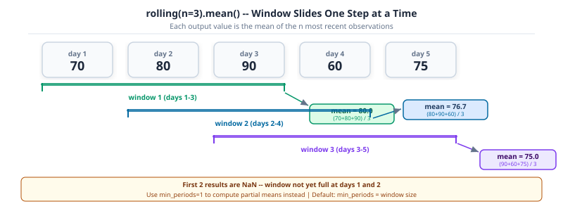

The CSV is loaded and clean. Now the questions get specific: which students went from failing to passing between semesters? Which course names have a trailing space or a typo? What is the 10-student rolling average for each program? None of these answers live in a raw column – you have to derive them.
Part 8 covered loading, selecting, filtering, and fixing missing values: the shape and structure of a DataFrame. This notebook covers the operations that turn raw columns into derived ones: applying your own functions row-by-row, counting categorical values, cleaning text, summarizing, and computing window statistics. Part 10 (13-combining-reshaping.ipynb) builds on this with groupby, merge, pivot, and time-series reshaping.
This notebook follows Part 8. It reloads the dataset from scratch, so you can run it independently. Install pandas 3 with pip install 'pandas>=3'.
import numpy as npimport pandas as pddf = pd.read_csv("data/university_analytics.csv")df["average_marks"] = (df["midterm_score"] + df["final_score"] + df["project_score"]) /3df.head()
student_id
cohort
program
gender
region
guardian
has_internet
course_id
course
semester
enrollment_date
study_hours
attendance_pct
midterm_score
final_score
project_score
final_grade
passed
average_marks
0
S0001
2023
Information Technology
F
South
Father
True
C01
Python Programming
Fall 2023
2023-09-04
10.8
88.6
46.1
54.4
57.8
D
True
52.766667
1
S0001
2023
Information Technology
F
South
Father
True
C02
Statistics
Spring 2024
2024-01-15
16.1
71.5
49.9
64.9
67.0
C
True
60.600000
2
S0001
2023
Information Technology
F
South
Father
True
C03
Data Structures
Fall 2023
2023-09-04
23.6
71.5
57.3
64.1
83.0
C
True
68.133333
3
S0001
2023
Information Technology
F
South
Father
True
C04
Linear Algebra
Spring 2024
2024-01-15
4.7
78.3
75.6
59.5
64.3
C
True
66.466667
4
S0001
2023
Information Technology
F
South
Father
True
C05
Machine Learning
Fall 2023
2023-09-04
16.2
63.2
53.6
59.4
57.0
C
True
56.666667
What’s New in Pandas 3
This series is written against pandas 3, released in 2025, and two of its changes are worth understanding before going further, because they change what you see in everyday output.
Run df.dtypes and look at the text columns. In pandas 2 they showed up as object, the catch-all dtype for anything that isn’t a fixed-width number. Pandas 3 gives strings a dedicated str dtype instead, backed by PyArrow when it’s installed:
object dtype could hold strings, but it could just as easily hold a mix of strings, numbers, and Python objects, with no guarantee which. The new str dtype can only hold strings or missing values, so a column typed str is a stronger guarantee than object ever was, and the PyArrow backing makes string operations faster. This is the same dtype the .str accessor in Sec. 3 operates on.
The second change doesn’t show up in any output, it changes how assignment behaves. Pandas 3 makes Copy-on-Write the only behaviour: selecting a subset of a DataFrame never lets you accidentally modify the original through it.
original unaffected: 52.76666666666667
subset changed : 0.0
Key Concept: Copy-on-Write removes the SettingWithCopyWarning guessing game
Before pandas 3, whether subset above was a view into df or an independent copy depended on details of how subset was created, the source of the infamous SettingWithCopyWarning. Pandas 3 makes every such selection behave as an independent copy: modifying subset never touches df. The warning is gone because the ambiguity it warned about is gone.
Pro Tip: pd.col() previews the expression style Polars uses
Pandas 3 adds pd.col(“name”) as an alternative to a lambda inside .assign(): df.assign(c=pd.col(“a”) + pd.col(“b”)) instead of df.assign(c=lambda d: d[“a”] + d[“b”]). It reads closer to the column-expression style used throughout Polars, covered in Part 11 of this series, and is worth recognising even though this notebook keeps using apply and lambda, the more widely used style today.
NoteLearning Objectives
By the end of Part 9 you will be able to:
#
Skill
Covered in
1
Recognise pandas 3’s str dtype and Copy-on-Write behaviour
Sec. 0
2
Apply your own function to a Series or DataFrame with map and apply
Sec. 1
3
Count, filter, and encode categorical columns
Sec. 2
4
Clean and query text columns with the .str accessor
Sec. 3
5
Summarize a dataset with descriptive statistics in one call
Sec. 4
6
Compute rolling and expanding window statistics
Sec. 5a
7
Write readable multi-condition filters with df.query()
Sec. 5b
1. Function Application with map and apply
NumPy’s vectorized operations cover arithmetic and comparisons, but sometimes the transformation you need is your own logic: a lookup, a multi-branch rule, a calculation that combines several columns per row. map and apply are how pandas runs that logic.
Series.map() is for simple one-to-one substitution: pass it a dict (or a function) and it replaces every value with its mapped equivalent. Recoding the gender column’s short codes into full labels is a map problem, not an apply one:
Series.map() transforms one column. For element-wise operations across ALL columns simultaneously, pandas 3.0 introduced DataFrame.map(): the replacement for the deprecated applymap(). Same signature, same semantics, new name.
# Round every numeric cell to 1 decimal placenumeric_cols = df.select_dtypes("number").columns.tolist()rounded = df[numeric_cols].map(lambda x: round(x, 1) if pd.notna(x) else x)rounded.head(3)
cohort
study_hours
attendance_pct
midterm_score
final_score
project_score
average_marks
0
2023
10.8
88.6
46.1
54.4
57.8
52.8
1
2023
16.1
71.5
49.9
64.9
67.0
60.6
2
2023
23.6
71.5
57.3
64.1
83.0
68.1
Common Mistake: Using applymap() from an older tutorial
df.applymap() was removed in pandas 3.0. Any code or tutorial older than 2024 that uses applymap will raise AttributeError. The fix is a one-word rename: df.applymap(fn) becomes df.map(fn).
Key Concept: map is for substitution, apply is for logic
map expects a dict or a simple function and only ever looks at one value at a time. apply accepts any function, including one with branching logic, and can run over a Series (one value at a time) or a DataFrame (one row or one column at a time, depending on axis). Reach for map first; reach for apply when the rule doesn’t fit in a lookup table.
Converting a normalized mark (0 to 1) into a letter grade needs a multi-branch rule, a job for apply with a plain Python function:
def letter_grade(mark: float) ->str:if mark >=80:return"A"elif mark >=60:return"B"elif mark >=40:return"C"else:return"D"df["grade"] = df["average_marks"].apply(letter_grade)df[["student_id", "average_marks", "grade"]].head()
student_id
average_marks
grade
0
S0001
52.766667
C
1
S0001
60.600000
B
2
S0001
68.133333
B
3
S0001
66.466667
B
4
S0001
56.666667
C
np.where handles one condition. For multiple ordered conditions with different outcomes, Series.case_when() (pandas 2.2+) reads like a SQL CASE statement: check cases top-to-bottom, return the value for the first match, and fall back to a default.
Pro Tip: case_when() for three or more branches instead of chained np.where()
case_when() evaluates conditions in order and stops at the first match, like if/elif/else. The default argument fills any row where no condition matched. Use it instead of chained np.where() calls whenever you have three or more branches.
DataFrame.apply(..., axis=1) runs a function once per row, with the whole row available as a Series. Use it when the rule needs more than one column at a time, for example flagging students who are both low-scoring and without internet access:
Common Mistake: Reaching for apply(axis=1) when a vectorized operation already does the job
df.apply(at_risk, axis=1) calls a Python function once per row, 17,190 times here, which is far slower than an equivalent boolean mask: (df[“average_marks”] < 0.4) & (df[“has_internet”] == 0) computes the same result with NumPy operating on whole columns at once. Use apply when the rule can’t be written with column-wise operations and comparisons; reach for masking first.
Activity 1 - Grade Distribution
Goal: Write a function that returns True for marks of 0.6 or higher and False otherwise, apply it to average_marks to create a new column passed, then print how many students passed.
.value_counts() counts how many rows fall into each category, sorted from most to least common. Passing normalize=True turns the counts into proportions, which is what you want for a question like “what fraction of students dropped out?”:
Example: Pass rate from value_counts
df[“passed”].value_counts(normalize=True) answers the pass-rate question in a single line, no manual division required.
.isin() filters rows whose value is in a given list, the categorical equivalent of a boolean comparison. Filtering to the two largest programs combines .value_counts() and .isin() directly:
program
Data Science 828
Computer Science 726
Name: count, dtype: int64
Pro Tip: .nunique() before .unique() on a column you have not seen yet
.nunique() returns just the count of distinct values. Running it before .unique() tells you whether printing every unique value is even a reasonable idea, useful for a column that turns out to have 4 categories versus one that turns out to have 4,000.
A column with a small, fixed set of values is a candidate for the category dtype: pandas stores each value once and keeps a compact integer code per row instead of repeating the full string, which is most of gender, program, and guardian here:
Most ML models need numbers, not category labels. pd.get_dummies() one-hot encodes a categorical column into one binary column per category, the standard first step before fitting a model on top of this data:
Key Concept: category dtype for memory, one-hot encoding for models
.astype(“category”) is about storage and speed: it doesn’t change what a column means, only how compactly pandas stores it. pd.get_dummies() is about preparing data for a model that expects numeric input: it turns one categorical column into several binary columns. The two are often used together, category dtype while exploring, dummy columns right before training.
Activity 2 - Guardian Breakdown
Goal: Print the value counts for the guardian column, then filter the DataFrame to students whose guardian is “mother” or “father” using .isin(), and print how many rows remain.
# TODO: print value counts for guardian, then filter to mother/father and print row count...
3. Working with Text Columns: the .str Accessor
student_id is a string column, and pandas keeps every string method behind a .str accessor rather than directly on the Series. The accessor exists because a Series can hold any dtype, .str is what tells pandas you specifically want the string-handling behaviour.
Key Concept: .str is a namespace – call string methods on the whole column at once
df[‘col’].str.upper() applies upper() to every element without a Python loop. The .str prefix is required – df[‘col’].upper() raises an AttributeError because upper isn’t a Series method. Common methods: .str.strip() for whitespace, .str.contains(pattern) for search, .str.extract(r’(pattern)’) for regex capture groups.
Common Mistake: Calling a string method directly on a Series
df[“student_id”].upper() raises an AttributeError: Series has no upper method. The string methods live on df[“student_id”].str, not on the Series itself, because the Series itself is a general-purpose container that happens to hold strings here.
.str.extract() pulls a regex capture group out of every value, the cleanest way to turn a structured string column into a usable numeric one. Every student_id here is the letter S followed by four digits (S0001–S0400), so extracting just the digits gives a numeric ID:
Goal: Use .str.startswith(“S”) to confirm every student_id starts with the letter “S”, then use .str.contains() to count how many contain the digit “0” anywhere in the ID.
# TODO: confirm every student_id starts with "s", then count IDs containing "0"...
4. Descriptive Statistics and Summarization
.describe() from Part 1 summarizes every numeric column with one call. .agg() goes a step further: it computes a chosen list of statistics for a chosen set of columns, in whatever combination you ask for.
Key Concept: .describe() is a first look, not a conclusion
.describe() shows count, mean, std, min, 25th/50th/75th percentile, and max. It skips non-numeric columns by default. .agg([‘mean’,‘std’,‘min’,‘max’]) gives you the same numbers for only the columns and statistics you care about, in a table you can compare at a glance. .corr() is Pearson correlation by default – it measures linear relationship, not causation.
.agg() accepts a list of function names and applies every one of them to every selected column, returning a single small table instead of one Series per statistic:
.corr() computes the pairwise correlation between numeric columns, a quick way to see whether strong performance in one subject tends to come with strong performance in another:
Prefer one .agg([...]) call over five separate .mean(), .std(), .min() calls. The aggregation table is easier to scan and keeps related numbers in one output.
Pro Tip: Use groupby().transform() to add a group statistic back to the original rows
groupby().agg() reduces a DataFrame to one row per group. groupby().transform() does the opposite: it computes the same group statistic but returns a Series the exact same length as the original DataFrame, aligned to the original index, so you can assign it as a new column without a merge:
# agg → one row per program
df.groupby("program")["average_marks"].agg("mean") # shape (4,)
# transform → one row per student, aligned to original index
df["caste_mean_marks"] = df.groupby("program")["average_marks"].transform("mean")
# every student's row now has their caste's mean, ready for feature engineering
Common use: normalising within groups. (df[“average_marks”] - df[“caste_mean_marks”]) / df.groupby(“program”)[“average_marks”].transform(“std”) z-scores each student relative to their caste group, not across the whole dataset, in two lines without any merge.
Activity 4 - Subject Spread
Goal: Use .agg() to compute the mean and standard deviation of midterm_score, final_score, and project_score for students with has_internet == True only.
# TODO: agg mean and std for the three mark columns, restricted to internet == 1...
5. Window Operations and Expressive Queries
Two operations that come up constantly in DS pipelines but don’t fit neatly under “string methods” or “statistics”: rolling windows for time-aware aggregation, and df.query() for readable multi-condition filters.
5a. Rolling and Expanding Windows
rolling(n) groups each row with the n-1 rows before it and applies an aggregation. It is the standard tool for smoothing noisy signals, computing moving averages, or creating features that capture recent trend for a time-ordered dataset.
expanding() is the cumulative version: each row aggregates everything from the start of the series up to that point. The first row is its own mean; the second is the mean of rows 1-2; and so on.

Rolling window of size 3 sliding over five days of scores. Window 1 covers days 1-3, window 2 days 2-4, window 3 days 3-5, each producing a mean. The first two results are NaN.
# Sort by average_marks to give the rolling window a meaningful order heredf_sorted = df.sort_values("average_marks").reset_index(drop=True)# 5-row rolling mean: smooth out noisedf_sorted["marks_rolling5"] = df_sorted["average_marks"].rolling(window=5).mean()# expanding mean: cumulative average as we move through sorted studentsdf_sorted["marks_cumulative"] = df_sorted["average_marks"].expanding().mean()df_sorted[["student_id", "average_marks", "marks_rolling5", "marks_cumulative"]].head(8)
student_id
average_marks
marks_rolling5
marks_cumulative
0
S0047
34.300000
NaN
34.300000
1
S0291
35.233333
NaN
34.766667
2
S0013
35.533333
NaN
35.022222
3
S0012
37.366667
NaN
35.608333
4
S0293
37.500000
35.986667
35.986667
5
S0354
37.600000
36.646667
36.255556
6
S0102
38.433333
37.286667
36.566667
7
S0382
38.466667
37.873333
36.804167
Key Concept: Rolling windows require ordered data to be meaningful
rolling(5) looks at the 5 rows immediately before each row in whatever order they sit in the DataFrame. On unsorted data the window picks up random rows and produces meaningless averages. Always sort by the relevant axis (time, score, sequence number) before calling rolling(). The NaN values in the first n-1 rows are correct: there isn’t enough history to fill those windows yet.
In time-series work, the pattern is almost always: sort by date, group by entity, then compute a rolling stat per group. The groupby().transform() tip from Section 4 applies here too:
# Per-program 10-student rolling mean of average_marks# transform keeps the result aligned to the original indexdf["marks_prog_rolling10"] = ( df.sort_values("average_marks") .groupby("program")["average_marks"] .transform(lambda s: s.rolling(10, min_periods=3).mean()))df[["program", "average_marks", "marks_prog_rolling10"]].dropna().head(6)
program
average_marks
marks_prog_rolling10
0
Information Technology
52.766667
52.410000
1
Information Technology
60.600000
60.450000
2
Information Technology
68.133333
67.816667
3
Information Technology
66.466667
66.356667
4
Information Technology
56.666667
56.316667
5
Information Technology
69.466667
68.976667
5b. Expressive Filtering with df.query()
Boolean masks work well for one or two conditions. For complex multi-condition filters, df.query() expresses the same logic as a readable string, closer to how you would say it out loud.
Reference an external variable inside a query string with the @ prefix:
# Boolean mask version -- correct but harder to readmask = (df["midterm_score"] >70) & (df["final_score"] >70) & (df["program"].isin(["Engineering", "Sciences"]))print(f"mask result : {mask.sum()} rows")# Same filter as a query string -- reads like a sentencethreshold =70result = df.query("midterm_score > @threshold and final_score > @threshold and program in ['Engineering', 'Sciences']")print(f"query result : {len(result)} rows")
mask result : 14 rows
query result : 14 rows
Pro Tip: Use query() for readability, masks for dynamic conditions
df.query() is evaluated with numexpr when the library is installed, which makes it faster than the equivalent boolean mask on large DataFrames. The downside: the query string is harder to build programmatically. Use query() when you’re writing a fixed filter that a reader should understand at a glance; use a mask when the conditions are assembled at runtime from user input or a config.
Activity 5 - Smoothed Grade Distribution
Goal: Sort the full DataFrame by average_marks ascending. Compute a 20-student rolling mean of average_marks. Then use df.query() to find students with a rolling mean above 75 who are in the “Sciences” program. Print how many rows match.
df_q = df.sort_values("average_marks").reset_index(drop=True)
df_q["rolling_mean"] = df_q["average_marks"].rolling(20).mean()
result = df_q.query("rolling_mean > 75 and program == 'Sciences'")
print(len(result))
# TODO: rolling mean, then query-filter to Sciences students above rolling threshold...
Capstone: Risk and Performance Report
Combine everything from this notebook into one short report: a derived grade column, a categorical breakdown, a text-column check, and a summary statistic, the same operations used in any first pass over a new dataset.
Capstone Exercise - Risk and Performance Report
Goal:
Confirm every student_id matches the pattern S followed by 4 digits, using .str.match() (Sec. 3)
Print the final_grade distribution as proportions with .value_counts(normalize=True) (Sec. 1, Sec. 2)
Use .agg() to compute the mean average_marks for passed vs failed students separately (Sec. 4)